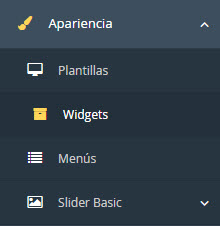
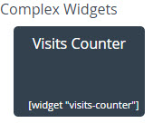
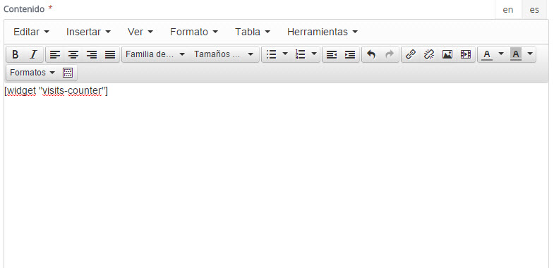
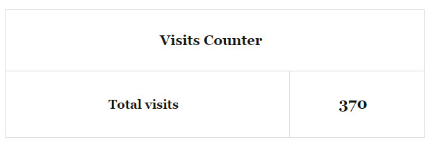

| Description |
|---|
| Visits Counter lets users know how much traffic you have on your site. Count the number of people who enter your site and displays it in a widget. |
| Configuration | |
|---|---|
|  | After activating the plugin, go to the menu Appearance / Widgets and click on the menu widgets. |
|  | After selecting the menu widget, copy the code [widget "visits-counter"] and place the contents of a "Post". |
|  | After copying the code [widget "visits-counter"], the content of a post, save the Post and display the Post to see the widgets in execution. |
|  | Widget running, visiting here can be made in the frontend of the site. |